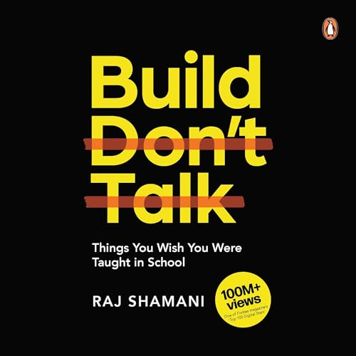

Library › Business & Startups
Build, Don't Talk — Summary & Key Lessons

Things you wish you were taught in school — an Indian creator-entrepreneur's raw playbook for building yourself first.
📖 OPEN THE FULL INTERACTIVE BREAKDOWN →🌐 Read it in Hindi, Hinglish, Gujarati, Tamil & 22 more languages — free, with audio.
💡 The Big Idea
Raj Shamani went from working in his family's small factory in Indore to selling FMCG products, building one of India's top business podcasts (Figuring Out), and speaking at the UN — all before 25. His book is the anti-theory manual: school taught you to memorize; nobody taught you to sell, negotiate, build a personal brand, manage money, or start before you're ready. The title is the philosophy — ideas are cheap, announcements are cheaper; the only résumé that counts is what you've built. Written for young India, applicable everywhere.
🧠 The 7 Key Lessons
Lesson 1: Everything Is Sales — Learn It First
Part 1: Skills School Skipped
Shamani's first commandment: whatever your field, you are in sales. The interview is a sales call (product: you). The pitch deck, the salary negotiation, the marriage conversation with in-laws — all sales. Yet school treats selling as something greasy that other people do. Learn the actual mechanics: listen more than you speak, sell outcomes not features, handle objections without ego, and ask for the close. The people who rise fastest aren't the smartest — they're the clearest communicators of value. Selling is the tax-free skill: it compounds in every domain simultaneously.
📖 Example: Shamani's own education: as a teenager he sold his family's FMCG products shop-to-shop in Indore — hundreds of tiny rejections, negotiations with shopkeepers over margins, learning to read a face in three seconds. He credits those shop counters, not any… Read the full example →
⚡ Do this: Practice selling something weekly: pitch an idea at work, negotiate one bill, sell one unused item online. Log every rejection — each one is a rep at the gym.
Lesson 2: Build in Public, Build a Brand
Part 2: Personal Branding
In the creator economy, invisibility is the new unemployment. Your personal brand isn't vanity — it's a trust asset that works while you sleep: opportunities, clients, and collaborators come to whoever is VISIBLY good, not just quietly good. Shamani's formula: pick one lane you genuinely care about, document your journey rather than performing expertise ('here's what I'm learning' beats 'here's what I know'), show up consistently for years not weeks, and give away your best knowledge free — the trust it builds is worth more than the secrets. People do business with people they feel they know.
📖 Example: Shamani started Figuring Out with basic equipment and zero podcast experience, openly learning interviewing on camera. Episode by episode — CEOs, cricketers, founders — the show became one of India's biggest business podcasts precisely because the audience… Read the full example →
⚡ Do this: Post once this week about something you're learning — a lesson, a failure, a small win. Repeat weekly for 6 months before judging the results.
Lesson 3: Start Before You're Ready — Start Messy
Part 3: Action Over Planning
The most expensive phrase in any language: 'I'm still preparing.' Shamani's rule is start messy — version one should embarrass you slightly, because the market teaches faster than any course, and momentum is a better teacher than motivation. Waiting for readiness is fear in a productivity costume: the certification you 'need,' the perfect logo, the one more book — all sophisticated procrastination. Clarity comes FROM action, not before it. The person who launches a mediocre thing today learns more by Friday than the perfectionist learns all year.
📖 Example: The book's recurring pattern from Shamani's guests and his own life: his first videos were shot on basic phones; his first speeches were to tiny rooms; his first products were sold from a scooter. Every polished thing people admire was preceded by an… Read the full example →
⚡ Do this: Take the project you've been planning and ship the ugliest functional version within 7 days. Announce nothing; just put it in front of 10 real people and collect reactions.
Lesson 4: Network = Who Knows What You Can Do
Part 4: Relationships & Networking
Shamani flips the networking cliché: it's not who you know — it's who knows what you can DO. Collecting contacts is hoarding; being known for a capability is leverage. The strategy: lead with value (help first, ask never — or at least, much later), be specific about what you do (the person who does 'many things' is remembered for nothing), and maintain relationships before you need them — the worst time to build a network is when you're desperate. One genuine relationship with proof-of-work behind it beats five hundred LinkedIn connections.
📖 Example: How did a 20-something from Indore get India's biggest founders on his podcast? Not contacts — demonstrated capability. Early guests saw the quality and care in small episodes; each strong episode became the pitch for the next bigger guest. The work… Read the full example →
⚡ Do this: Help three people in your field this month with zero ask attached — an intro, a piece of feedback, a share of their work. Separately, make sure your bio says ONE specific thing you do.
Lesson 5: Money Skills Nobody Taught You
Part 5: Financial Literacy
School produced graduates who can solve calculus but can't read a salary slip. Shamani's basics for young earners: income has two jobs — surviving today and buying freedom tomorrow — so pay your future first (invest before you spend, however small); understand the difference between looking rich (EMIs, gadgets, status) and getting rich (assets, skills, ownership); build an emergency fund before any luxury; and treat your earning ability itself as the biggest asset — the highest-ROI investment available to a twenty-something is a skill that raises their market rate. Compounding rewards the early far more than the brilliant.
📖 Example: The book's generational observation: the first salary in India traditionally triggers celebration spending — the bike, the phone, the treats — and a decade later, nothing owned but depreciation. Shamani contrasts the peer who invested ₹5,000 monthly from age… Read the full example →
⚡ Do this: Automate any amount — even ₹1,000/month — into an index SIP this week. Then allocate a monthly 'skill budget' and spend it on one income-raising capability this quarter.
Lesson 6: Distribution Is the Kingmaker
Part 6: The Creator-Business Playbook
Shamani's core business insight for the 2020s: product is table stakes — distribution decides winners. The best chai in India earns less than the average chai with a viral reel. Whoever owns attention owns the market: build an audience BEFORE you need it, and every future product launches into a warm room instead of a cold void. This is why creators are becoming founders (audience-first, product-second) and why businesses without content engines pay rising rents to platforms forever. Attention is the new real estate — and unlike ads, owned distribution compounds.
📖 Example: The pattern across Shamani's podcast guests: brands born from audiences (creator-founded D2C labels riding existing trust) launch products that sell out in hours with zero ad spend, while traditionally excellent products burn crores on marketing for the same… Read the full example →
⚡ Do this: Choose your distribution asset — newsletter, YouTube, LinkedIn, Instagram — and commit to one piece of value per week for a year. Build the room before you have something to sell it.
Lesson 7: Reputation: The Long Game That Wins
Part 7: Character & Consistency
The closing thesis: in a small-world industry (and every industry is small now), reputation compounds faster than talent. Deliver what you promise — early if possible; take the loss to keep your word; say no to quick money that costs long-term trust; and remember that in the age of screenshots, every shortcut is permanent. Consistency is the multiplier on everything else in the book: the builder who shows up weekly for five years beats the genius who sprints quarterly. Build slowly, publicly, honestly — and the compounding takes care of the rest. Talk depreciates. Builds appreciate.
📖 Example: Shamani's observation from interviewing hundreds of successful Indians: not one attributed their success to a brilliant hack; nearly all described the same boring engine — years of kept promises, consistent output, and relationships that never got burned.… Read the full example →
⚡ Do this: Audit your open promises this week — deliver or renegotiate every one. Then pick your five-year lane and define what 'showing up weekly' means in it. Start this week.
✅ 5-Step Action Plan
- Sell something every week — log the rejections as training reps.
- Ship your embarrassing v1 within 7 days; let the market teach you.
- Post one 'learning in public' piece weekly for 6 months.
- Automate a starter SIP + a monthly skill budget this week.
- Pick one distribution channel and feed it weekly for a year.
💬 Best Quotes from Build, Don't Talk
- “Your network is not who you know. It's who knows what you can do.”
- “Sell yourself before you sell anything else — everything in life is a sales job.”
- “Start messy. Perfection is procrastination wearing makeup.”
Interactive version: mark lessons as read, listen in your language, share quote cards.